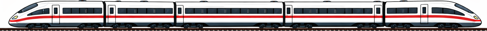

Nie wieder rückwärts fahren: Diese Erweiterung zeigt dir bei der Sitzplatzwahl auf bahn.de, in welche Richtung dein ICE, IC oder EC fährt.

Beim nächsten Ticketkauf bist du startklar — die Erweiterung meldet sich nicht von selbst und sammelt keine Daten.
Jetzt Verbindung suchenTipp: Klicke auf das Puzzle-Symbol 🧩 neben der Adressleiste und pinne Fahrtrichtung an, damit das Icon immer sichtbar ist.
Kostenlos · Open Source · Kein Tracking